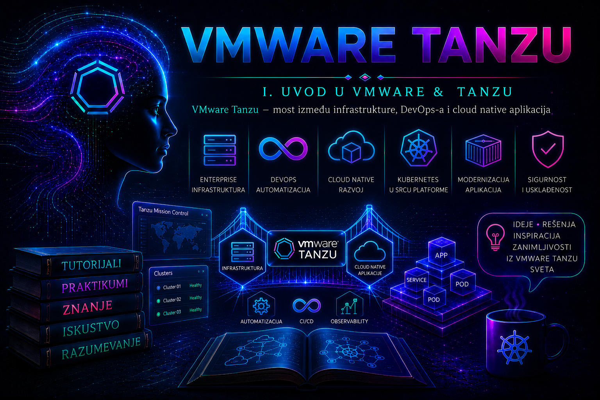

VMware & Tanzu

Tradicionalna administracija infrastrukture i savremeni razvoj aplikacija više ne mogu da se posmatraju kao odvojene discipline. Virtuelna mašina, operativni sistem, kontejner, Kubernetes klaster, mrežna politika, skladište podataka i CI/CD proces predstavljaju različite slojeve istog informacionog sistema. Kada aplikacija postane nedostupna, uzrok može biti neispravan kod, pogrešna konfiguracija Deployment objekta, nedostupan Kubernetes node, popunjen datastore, neuspešno dinamičko kreiranje volumena, mrežno pravilo, istekli sertifikat ili problem sa fizičkim resursom. Administrator koji poznaje samo jedan sloj često vidi simptom, ali ne i ceo lanac zavisnosti.
VMware infrastruktura obezbeđuje računarske, mrežne, skladišne, bezbednosne i upravljačke mogućnosti na kojima mogu da rade tradicionalne virtuelne mašine i Kubernetes okruženja. Tanzu tehnologije nad tim osnovama obezbeđuju platformsku podršku za izgradnju, isporuku, upravljanje i nadzor savremenih aplikacija. U zavisnosti od izdanja i modela implementacije, organizacija može koristiti vSphere Supervisor, VMware vSphere Kubernetes Service, samostalne Tanzu Kubernetes Grid komponente, Tanzu Platform, Tanzu Hub, centralizovane servise za upravljanje klasterima ili kombinaciju ovih proizvoda.
Nazivi proizvoda i dostupne funkcije menjali su se između generacija vSphere, VMware Cloud Foundation i Tanzu portfolija. Zbog toga administrator ne sme da pretpostavi da termin iz starije dokumentacije odgovara aktuelnom proizvodu. Na primer, stariji Tanzu Kubernetes Cluster API resursi i raniji nazivi servisa ne treba automatski primenjivati na novija VKS okruženja. Pre projektovanja ili promene potrebno je proveriti tačnu verziju VMware Cloud Foundation ili vSphere okruženja, verziju Supervisor servisa, podržane Kubernetes verzije, licencu, listu kompatibilnih paketa i odgovarajući životni ciklus proizvoda.
Od virtuelne infrastrukture do aplikacione platforme
U klasičnom modelu administrator priprema virtuelnu mašinu, instalira operativni sistem, konfiguriše mrežu, diskove, bezbednosne agente i middleware, a zatim aplikacioni tim instalira aplikaciju. Takav model i dalje ima važnu ulogu, naročito za baze podataka, nasleđene sisteme, komercijalne proizvode i aplikacije koje nisu projektovane za kontejnere. Međutim, ručna izgradnja velikog broja pojedinačnih servera teško prati dinamiku savremenog razvoja.
Kubernetes menja jedinicu upravljanja. Administrator više ne obezbeđuje samo pojedinačan server već platformu u kojoj aplikacioni tim deklarativno opisuje željeno stanje. Deployment navodi koliko replika aplikacije treba da postoji, Service obezbeđuje stabilan mrežni pristup, ConfigMap i Secret odvajaju konfiguraciju od image-a, a PersistentVolumeClaim zahteva trajno skladište bez direktnog izbora konkretnog diska. Kubernetes kontroleri zatim neprekidno porede željeno i stvarno stanje i pokušavaju da otklone odstupanja.
Ovo ne uklanja infrastrukturu. Kubernetes node i dalje mora imati procesor, memoriju, mrežnu vezu, vreme, DNS i pristup skladištu. U vSphere okruženju node je najčešće virtuelna mašina. Njegov virtuelni disk nalazi se na datastore-u, mrežni adapter je povezan sa odgovarajućom mrežom, a njegov rad zavisi od ESXi hosta, vCenter Servera i drugih infrastrukturnih servisa. Tanzu i VKS povezuju deklarativni Kubernetes model sa tim infrastrukturnim mogućnostima.
Administrator zato mora razumeti oba pravca zavisnosti. Posmatrano odozgo nadole, aplikacija zavisi od Pod-a, Pod od node-a, node od virtuelne mašine, virtuelna mašina od hosta, mreže i datastore-a. Posmatrano odozdo nagore, promena datastore politike, mrežnog segmenta, resursnog pool-a ili dostupnosti hosta može uticati na klaster i aplikacije koje infrastruktura podržava.
Šta zajedničko upravljanje zaista znači
Zajedničko upravljanje ne znači da se VM i Kubernetes workload-i pretvaraju u istu vrstu objekta niti da jedan tim mora posedovati svaki sloj. Ono znači da se njihovi životni ciklusi oslanjaju na usklađene failure domene, politike kapaciteta, identitet, mrežu, storage, observability i change management. vCenter i vSphere ostaju izvor istine za fizičke hostove, klastere, datastore-ove i mnoge VM operacije; Kubernetes API ostaje izvor željenog i stvarnog stanja workload-a; platformski katalog i Git repozitorijum mogu biti odobreni izvori deklarativne konfiguracije. Dobar operativni model unapred određuje koji sistem je autoritativan za koju činjenicu.
| Predmet upravljanja | Primarni kontrolni sloj | Posledica pogrešne prečice |
|---|---|---|
| ESXi host, vSphere klaster i datastore | vCenter Server i odgovarajući VCF životni ciklus | Direktna promena može narušiti HA, DRS, podržanost ili kapacitet workload klastera. |
| VKS cluster i njegovi node pool-ovi | Supervisor/VKS deklarativni API i podržani upravljački tok | Ručno menjanje ili gašenje upravljane node VM stvara drift koji kontroler može poništiti ili zameniti. |
| Deployment, Service i aplikaciona konfiguracija | Kubernetes API, poželjno kroz odobreni GitOps/CI tok | Ručna hotfix promena može nestati pri sledećoj sinhronizaciji i ostaviti Git različitim od klastera. |
| Podaci aplikacije | Aplikacioni i data-protection postupak usklađen sa CSI/storage slojem | VM snapshot ili izvoz manifesta sam po sebi ne dokazuje konzistentan oporavak podataka. |
Supervisor dodatno omogućava da se određeni infrastrukturni resursi izlože kroz Kubernetes-stil API. VM Service, na primer, omogućava deklarativno upravljanje virtuelnim mašinama u okviru Supervisor Namespace-a, ali to ne pretvara svaku postojeću vSphere VM u Kubernetes workload niti ukida vCenter. Dostupnost VM Service-a, tipova VM, image biblioteka, mreža i storage klasa zavisi od konfiguracije, dozvola i izdanja.
VMware, Tanzu i Kubernetes nisu ista tehnologija
VMware vSphere je platforma za virtuelizaciju računarskih resursa i centralizovano upravljanje virtuelnom infrastrukturom. Njene osnovne komponente obuhvataju ESXi hipervizore i vCenter Server, uz dodatne mrežne, skladišne, bezbednosne i operativne komponente u zavisnosti od arhitekture. VMware Cloud Foundation integriše širi skup infrastrukturnih sposobnosti u standardizovanu privatnu cloud platformu.
Kubernetes je otvorena, prenosiva i proširiva platforma za upravljanje kontejnerskim workload-ovima i servisima. Klaster se sastoji od control plane-a i jednog ili više worker node-ova. Kubernetes API predstavlja centralnu tačku upravljanja, dok kontroleri, scheduler, kubelet i drugi servisi održavaju deklarisano stanje.
Tanzu nije samo drugi naziv za Kubernetes. Tanzu obuhvata proizvode i servise za aplikacione platforme, upravljanje Kubernetes okruženjima, razvojne tokove, upravljanje aplikacijama i povezane operativne funkcije. Tačan skup mogućnosti zavisi od kupljenog proizvoda, izdanja i načina implementacije. Administrator zato mora razlikovati najmanje četiri pitanja:
- Ko obezbeđuje osnovnu infrastrukturu i njen životni ciklus?
- Ko obezbeđuje i održava Kubernetes klastere?
- Ko upravlja aplikacionim servisima, paketima, image-ima i razvojnim tokovima?
- Ko je odgovoran za politike, bezbednost, monitoring, backup i oporavak svakog sloja?
Pogrešno je zaključiti da kupovina Tanzu proizvoda automatski rešava organizacione, bezbednosne i operativne probleme. Platforma može standardizovati veliki deo posla, ali ne može zameniti jasno vlasništvo nad sistemom, upravljanje promenama, kontrolu pristupa, kapacitetno planiranje, testiranje oporavka i kvalitetnu saradnju infrastrukturnih i aplikacionih timova.
Most između infrastrukture i DevOps procesa
DevOps nije naziv jednog alata niti sinonim za automatizaciju. To je način organizovanja rada u kojem razvojni i operativni timovi zajednički preuzimaju odgovornost za bezbednu i pouzdanu isporuku aplikacije. VMware i Tanzu okruženje može da podrži takav model kada se infrastrukturne mogućnosti izlože kroz kontrolisane, ponovljive i merljive servise.
Infrastrukturni tim može, na primer, pripremiti standardne Kubernetes klase klastera, odobrene verzije, storage klase, mrežne segmente, politike pristupa i nadzor. Platformski tim zatim od tih sposobnosti formira podržani proizvod za interne korisnike. Razvojni tim ne mora da zna na kom se ESXi hostu nalazi svaki worker node, ali mora znati kako da zatraži resurse, postavi zahteve i ograničenja, proveri stanje aplikacije i prijavi problem sa dovoljnim tehničkim podacima.
Dobra apstrakcija skriva nepotrebnu složenost, ali ne skriva odgovornost. Razvojni tim može samostalno primeniti aplikaciju, ali ne bi trebalo da dobije administratorska prava nad celim klasterom. Infrastrukturni administrator može održavati node-ove i storage politike, ali ne treba samovoljno menjati aplikacioni manifest koji je pod kontrolom aplikacionog tima. Platformski tim definiše granicu između samousluživanja i centralne kontrole.
Najveća vrednost ovakvog modela nije u tome što se resurs kreira nekoliko minuta brže, već u tome što svaki zahtev prolazi kroz isti odobreni obrazac. Standardizovani obrazac može sadržati odgovarajuću Kubernetes verziju, mrežna pravila, audit, registry politiku, monitoring, backup oznake, limite resursa i vlasničke metapodatke. Time se smanjuje broj ručnih varijacija koje kasnije postaju izvor incidenata.
Arhitektonske koristi i cena integracije
Na postojećoj vSphere infrastrukturi Tanzu može da skrati put od zahteva do podržanog Kubernetes klastera, ponovo upotrebi poznate politike resursa i skladišta i omogući korelaciju događaja od aplikacije do hipervizora. Organizacija dobija zajedničke operativne discipline, ali i novu zavisnost: kvar ili planirana promena vCenter, Supervisor, mrežnih, DNS, NTP, identity ili storage servisa može imati širi uticaj od kvara jedne aplikacije. Integracija zato povećava vrednost standardizacije samo kada su management i workload putanje projektovane sa odgovarajućom dostupnošću.
- Dostupnost: HA infrastrukture štiti node VM od određenih host kvarova, ali ne zamenjuje više replika aplikacije, PodDisruptionBudget, pravilnu raspodelu po zonama ili aplikacioni failover. Tačna podrška za višezonske VKS klastere zavisi od VCF/VKS verzije.
- Performanse: DRS i vSphere raspoređuju VM resurse, dok Kubernetes scheduler raspoređuje Pod-ove prema svojim zahtevima, affinity pravilima i dostupnim node resursima. Ni jedan scheduler nema potpunu sliku ako requests/limits, VM klase i rezervacije ne odražavaju stvarno opterećenje.
- Bezbednost: vCenter RBAC, Supervisor Namespace dozvole i Kubernetes RBAC predstavljaju različite granice. Najmanja privilegija mora se dokazati na svakom sloju; jedna široka administratorska grupa ne treba da bude univerzalno rešenje.
- Oporavak: vCenter backup, Supervisor/VKS recovery postupak, Kubernetes konfiguracija i aplikacioni podaci imaju različite RPO/RTO zahteve. Plan mora definisati redosled obnove zavisnosti i završni poslovni test.
Kada Tanzu na vSphere ima smisla, a kada ne
| Signal | Zaključak za odluku | Dokaz koji treba prikupiti |
|---|---|---|
| Organizacija već pouzdano upravlja vSphere okruženjem i želi standardnu internu Kubernetes uslugu. | Jak kandidat, posebno kada postoje jasni platform owner-i i automatizovan životni ciklus. | Podržana matrica, kapacitet N+1, mrežni/DNS/NTP plan, RACI, SLO i troškovni model. |
| Aplikacije zahtevaju i VM i kontejnere sa usklađenim politikama. | Integrisani model može smanjiti operativne silose, ali workload-i ostaju različiti. | Mapiranje aplikacija, storage i mrežnih zahteva, backup i bezbednosnih kontrola. |
| Tim nema Kubernetes operativno znanje, monitoring ni incident proces. | Tehnologija sama ne uklanja jaz; najpre izgraditi platformske kompetencije i ograničen pilot. | Skills assessment, runbook-ovi, dežurstvo, restore test i kriterijumi izlaska iz pilota. |
| Potreban je samo mali broj stabilnih, vendor-podržanih VM aplikacija. | Kubernetes/Tanzu može biti nepotrebna složenost za taj opseg. | TCO poređenje, zahtevi dobavljača, učestalost promena i potrebe za skaliranjem. |
| Zahteva se cloud-agnostic prenosivost bez prihvatanja infrastrukturnih specifičnosti. | Ne pretpostavljati potpunu prenosivost; proveriti zavisnosti od storage klasa, load balancera, identiteta i platformskih servisa. | Test migracije i popis vendor-specifičnih API-ja, CRD-ova i operativnih integracija. |
Cloud native aplikacija nije samo aplikacija u kontejneru
Prebacivanje postojeće aplikacije u container image ne čini je automatski cloud native aplikacijom. Aplikacija može biti zapakovana u kontejner, a ipak zahtevati ručno podešavanje, čuvati stanje na lokalnom disku, zavisiti od jedne instance, ne podržavati health probe provere i prekidati rad pri svakom restartovanju Pod-a.
Cloud native pristup obično podrazumeva automatizovanu isporuku, deklarativnu konfiguraciju, horizontalno skaliranje gde je primenljivo, posmatranje stanja kroz metrike i logove, otpornost na zamenu pojedinačnih instanci i jasno upravljanje zavisnostima. To ne znači da svaka aplikacija mora biti podeljena na veliki broj mikroservisa. Nepotrebna fragmentacija povećava mrežnu, bezbednosnu i operativnu složenost.
Administrator mora prepoznati kada je Kubernetes odgovarajuća platforma. Dobar kandidat je aplikacija koja može da se automatizovano izgradi i isporuči, podržava deklarativnu konfiguraciju, ima poznate zahteve za resursima i može da podnese promenu lokacije izvršavanja. Kubernetes može biti loš izbor za mali stabilan sistem bez potrebe za skaliranjem, proizvod koji dobavljač podržava samo na tradicionalnoj virtuelnoj mašini ili aplikaciju čija arhitektura zahteva lokalno stanje i ručne intervencije.
Zašto je ova kombinacija važna enterprise administratoru
Enterprise okruženje ne vrednuje tehnologiju samo prema tome da li aplikacija može da se pokrene. Sistem mora biti podržan, bezbedan, nadgledan, obnovljiv, dokumentovan i usklađen sa internim kontrolama. Administrator mora znati ko je odobrio promenu, koja je verzija instalirana, gde se nalaze logovi, kakav je plan povratka i kako se dokazuje da je usluga nakon promene funkcionalna.
Poznavanje VMware i Tanzu slojeva omogućava administratoru da razlikuje najmanje sledeće vrste problema:
| Sloj | Primer simptoma | Prva provera |
|---|---|---|
| Aplikacija | Proces radi, ali vraća HTTP grešku | Log aplikacije, readiness i funkcionalni test |
| Kubernetes workload | Pod je u stanju Pending ili CrashLoopBackOff | kubectl describe pod i događaji namespace-a |
| Kubernetes node | Više nepovezanih Pod-ova postaje nedostupno | kubectl get nodes, uslovi node-a i kubelet događaji |
| Virtuelna mašina | Node nije dostupan ili nema resurse | Power state, alarmi, CPU, memorija i virtual hardware u vCenteru |
| Storage | PVC ostaje Pending ili aplikacija ne može da upisuje podatke | StorageClass, PVC događaji, CSI komponente i stanje datastore-a |
| Mreža i DNS | Service postoji, ali komunikacija ne radi | EndpointSlice, DNS rezolucija, mrežne politike i putanja do load balancera |
Bez ovakvog razdvajanja administrator može pogrešno restartovati aplikaciju kada je problem u storage-u, povećavati CPU virtuelne mašine kada je uzrok pogrešan resource limit ili menjati mrežnu infrastrukturu kada Service nema nijedan spreman endpoint.
Znanja koja se prenose između slojeva
Iskustvo sa VMware infrastrukturom pruža važne osnove za rad sa Kubernetes platformama. Razumevanje visoke dostupnosti, planiranja kapaciteta, mrežne segmentacije, skladišnih politika, sertifikata, DNS-a, NTP-a, rezervacija i upravljanja promenama direktno se primenjuje i u Tanzu okruženju. Razlika je u tome što se resursi sve češće zahtevaju deklarativno i menjaju automatizovano.
Kubernetes znanje zauzvrat menja način na koji infrastrukturni administrator razmišlja. Umesto ručnog održavanja identiteta svakog servera, naglasak prelazi na željeno stanje, kontrolne petlje, automatizovanu zamenu i standardizovane obrasce. Node nije nužno server koji se godinama ručno popravlja; u pravilno projektovanom okruženju može biti kontrolisano zamenjen novim node-om.
DevOps i GitOps prakse uvode dodatnu disciplinu. Konfiguracija se verzioniše, promena se pregleda, automatizovano proverava i povezuje sa poslovnim zahtevom. Međutim, Git repozitorijum sam po sebi nije backup celog sistema. U njemu se mogu nalaziti manifesti, ali ne i stvarni podaci aplikacije, stanje eksternih baza, sadržaj volumena, privatni ključevi ili svi objekti koje su kreirali kontroleri.
Granice odgovornosti i model zajedničkog vlasništva
Jedna od najčešćih enterprise grešaka jeste nejasna granica odgovornosti. Kada dođe do incidenta, infrastrukturni tim tvrdi da je virtuelna mašina uključena, aplikacioni tim da je Deployment primenjen, a mrežni tim da je segment dostupan. Ipak, korisnička usluga ne radi. Tehnički tačna izjava svakog tima ne predstavlja dokaz da je ceo servis funkcionalan.
Za svaku produkcionu uslugu treba definisati najmanje vlasnika aplikacije, vlasnika platforme, vlasnika infrastrukture, dežurnu eskalaciju i odgovornost za podatke. RACI ili slična matrica korisna je samo ako je povezana sa konkretnim operativnim postupcima. Mora biti jasno ko odobrava Kubernetes verziju, ko menja storage politiku, ko upravlja image registry pristupom, ko rotira sertifikate, ko obnavlja podatke i ko potvrđuje poslovnu funkcionalnost.
Administrator treba da radi u okviru najmanjih potrebnih privilegija. Pravo čitanja stanja celog klastera ne podrazumeva pravo izmene workload-a. Pravo administracije određenog namespace-a ne podrazumeva pravo promene cluster-wide politika. Pristup vCenter inventaru ne znači da operator sme da isključi worker virtuelnu mašinu kojom upravlja automatizovani životni ciklus klastera.
Najčešće pogrešne pretpostavke
- „Kubernetes uklanja potrebu za infrastrukturnim administratorima.” Kubernetes automatizuje deo operacija, ali povećava značaj pouzdane infrastrukture, mreže, skladišta, identiteta i upravljanja životnim ciklusom.
- „Ako je Pod Running, aplikacija radi.” Stanje Running potvrđuje da je kontejner pokrenut, ali ne i da aplikacija uspešno obrađuje korisničke zahteve.
- „Ako je virtuelna mašina uključena, node je zdrav.” Kubelet, container runtime, mrežni dodatak ili pristup API serveru mogu biti neispravni iako je VM uključena.
- „Restart je dovoljan troubleshooting.” Restart može privremeno ukloniti simptom i istovremeno uništiti podatke potrebne za utvrđivanje uzroka.
- „Sve Tanzu instalacije rade isto.” Operativni postupci zavise od proizvoda, verzije, licence, infrastrukture i načina upravljanja klasterima.
- „Samousluživanje znači neograničen pristup.” Bez kvota, politika i audita samousluživanje može izazvati nekontrolisanu potrošnju, bezbednosne propuste i nestabilnost platforme.
Integrisani praktikum – praćenje aplikacije od Kubernetes objekta do vSphere virtuelne mašine
Poslovni kontekst. Organizacija uvodi internu aplikacionu platformu na vSphere infrastrukturi. Aplikacioni tim treba samostalno da primenjuje stateless web aplikacije u svom namespace-u, dok platformskom timu ostaje odgovornost za klaster, node-ove, mrežu, storage i standarde. Pre produkcione primene potrebno je dokazati da operator može da prati aplikaciju kroz Kubernetes sloj, prepozna pogrešan image, izvrši bezbedan rollback i poveže worker node sa odgovarajućom virtuelnom mašinom u vCenter inventaru.
Cilj. Primeniti testnu aplikaciju bridge-demo, proveriti njenu mrežnu dostupnost, izazvati kontrolisani neuspeh sa nepostojećim image tagom, dijagnostikovati uzrok i vratiti poslednju ispravnu reviziju bez direktnog menjanja infrastrukture.
Referentno okruženje. Koristi se VKS workload klaster tkg-prod-01 sa tri worker node-a, vCenter Server vcsa01.lab.example, namespace apps-demo, lokalni direktorijum $HOME/tashizza-labs/lesson-02, Deployment bridge-demo i ClusterIP Service bridge-demo. Operatorska stanica ima instalirane kompatibilne verzije alata kubectl i VMware PowerCLI.
Preduslovi i prava pristupa. Korisnik mora imati važeći kubeconfig i pravo da čita node objekte, događaje i namespace apps-demo, kao i da u tom namespace-u kreira i menja Deployment i Service objekte. Za vCenter je dovoljan read-only pristup inventaru virtuelnih mašina. Administrator ne koristi cluster-admin niti vCenter Administrator privilegiju ako za zadatak nisu potrebne.
-
Priprema radnog direktorijuma i potvrda konteksta.
Pre bilo kakve promene proverava se na koji klaster pokazuje aktivni kubeconfig. Primena manifesta na pogrešan produkcioni klaster predstavlja čestu i ozbiljnu operativnu grešku.
Validacija: aktivni kontekst mora pripadati klasterumkdir -p "$HOME/tashizza-labs/lesson-02" cd "$HOME/tashizza-labs/lesson-02" kubectl config current-context kubectl cluster-info kubectl auth can-i get nodes kubectl auth can-i create deployments -n apps-demo kubectl auth can-i create services -n apps-demotkg-prod-01. Provere pristupa treba da vrateyes. Rezultatnonije razlog za korišćenje privilegovanijeg naloga bez odobrenja; potrebno je zatražiti precizno RBAC pravo. -
Početna provera zdravlja klastera.
Pre aplikacione promene proverava se da li postoje infrastrukturni simptomi koji bi kasnije mogli biti pogrešno pripisani aplikaciji.
Validacija: svi planirani worker node-ovi treba da imaju stanjekubectl get nodes -o wide kubectl get pods -A --field-selector=status.phase!=Running,status.phase!=Succeeded kubectl get events -A --sort-by=.metadata.creationTimestamp | tail -n 30Ready. Potrebno je istražiti Pod-ove u stanjima kao što suPending,FailediliUnknown, ali sistemski Job objekti koji su završeni stanjemSucceedednisu problem. Događaji se tumače prema razlogu, učestalosti i vremenu nastanka; pojedinačan istorijski događaj nije isto što i aktivan ponavljajući problem. -
Kreiranje namespace-a samo kada ne postoji.
Manifest koristi isti namespace tokom celog praktikuma. Pre kreiranja proverava se postojeće stanje da se ne bi prepisivale tuđe oznake ili politike.
Validacija: namespace mora imati stanjekubectl get namespace apps-demo >/dev/null 2>&1 || kubectl create namespace apps-demo kubectl get namespace apps-demo --show-labelsActive. Ako ga automatski obezbeđuje platforma, ručno kreiranje treba izostaviti i koristiti odobreni postupak organizacije. -
Kreiranje deklarativnog manifesta.
Deployment koristi tri replike zvaničnog NGINX image-a sa eksplicitnim tagom, resource zahtevima i ograničenjima, readiness proverom i liveness proverom. Service obezbeđuje stabilan pristup Pod-ovima unutar klastera.
Validacija: server-side apply treba da kreira Deployment i Service bez konflikta vlasništva nad poljima. Eksplicitni image tag omogućava ponovljivost, ali u strogo kontrolisanim okruženjima prednost ima image digest i interno odobren registry.cat > bridge-demo.yaml <<'EOF' apiVersion: apps/v1 kind: Deployment metadata: name: bridge-demo namespace: apps-demo labels: app.kubernetes.io/name: bridge-demo app.kubernetes.io/part-of: tashizza-platform-lab spec: replicas: 3 revisionHistoryLimit: 5 selector: matchLabels: app.kubernetes.io/name: bridge-demo template: metadata: labels: app.kubernetes.io/name: bridge-demo app.kubernetes.io/part-of: tashizza-platform-lab spec: containers: - name: web image: nginx:1.28.0 imagePullPolicy: IfNotPresent ports: - name: http containerPort: 80 resources: requests: cpu: 50m memory: 64Mi limits: cpu: 250m memory: 128Mi readinessProbe: httpGet: path: / port: http initialDelaySeconds: 3 periodSeconds: 5 livenessProbe: httpGet: path: / port: http initialDelaySeconds: 10 periodSeconds: 10 --- apiVersion: v1 kind: Service metadata: name: bridge-demo namespace: apps-demo spec: selector: app.kubernetes.io/name: bridge-demo ports: - name: http port: 80 targetPort: http type: ClusterIP EOF kubectl apply --server-side --field-manager=tashizza-lab -f bridge-demo.yaml
Deployment treba da ima tri dostupne replike, Service treba da ima ClusterIP adresu, a EndpointSlice tri spremna endpoint-a.kubectl rollout status deployment/bridge-demo -n apps-demo --timeout=120s kubectl get deployment,pods,service,endpointslice -n apps-demo -o wide -
Funkcionalna provera preko kontrolisanog port-forward procesa.
ClusterIP nije namenjen direktnom pristupu van klastera. Za kratku administratorsku proveru koristi se lokalni port-forward bez menjanja mrežne izloženosti servisa.
Validacija: očekivani rezultat jekubectl port-forward -n apps-demo service/bridge-demo 8080:80 >port-forward.log 2>&1 & PORT_FORWARD_PID=$! sleep 3 curl --fail --silent --show-error --output /dev/null \ --write-out 'HTTP %{http_code}\n' \ http://127.0.0.1:8080/HTTP 200. Ako zahtev ne uspe, proveravaju seport-forward.log, EndpointSlice objekat i readiness stanje Pod-ova. Proces se nakon testa zaustavlja da ne bi ostao nekontrolisani lokalni tunel.kill "$PORT_FORWARD_PID" wait "$PORT_FORWARD_PID" 2>/dev/null || true -
Povezivanje Pod-a, node-a i vSphere virtuelne mašine.
Kubernetes prikazuje na kom node-u radi svaki Pod. Provider ID node-a omogućava povezivanje Kubernetes objekta sa infrastrukturnim identitetom virtuelne mašine.
Validacija: svaki Pod mora biti raspoređen na poznat node, a node treba da ima provider ID kada ga konkretna integracija izlaže. U vSphere cloud provider implementaciji vrednost je često oblikakubectl get pods -n apps-demo \ -l app.kubernetes.io/name=bridge-demo \ -o custom-columns='POD:.metadata.name,NODE:.spec.nodeName,READY:.status.containerStatuses[0].ready' kubectl get nodes \ -o custom-columns='NODE:.metadata.name,PROVIDER-ID:.spec.providerID,INTERNAL-IP:.status.addresses[?(@.type=="InternalIP")].address'vsphere://<VM-UUID>, ali se prefiks i format proveravaju u stvarnom objektu. PrazanproviderIDna VKS node-u može biti simptom nedovršene cloud-provider registracije; nije opravdanje da se vrednost ručno upiše.Na administratorskoj stanici sa instaliranim aktuelnim VCF PowerCLI modulima koristi se read-only vCenter nalog. Lozinka se ne navodi u skripti niti čuva u istoriji komandne linije. Ako je u okruženju još instaliran raniji paket
VMware.PowerCLI, nazivi osnovnih vSphere cmdlet-a ostaju isti, ali se instalacija i podržana verzija proveravaju u aktuelnoj PowerCLI dokumentaciji.
Validacija: Kubernetes interna IP adresa i inventarski podaci treba da omoguće identifikaciju odgovarajuće worker VM. Naziv VM nije uvek jednak Kubernetes imenu node-a, pa se korelacija zasniva na proverljivim identifikatorima, provider UUID-u, inventarskom MoRef-u i IP adresama, a ne samo na sličnosti naziva. PowerCLI prikaz gostujuće IP adrese zavisi od dostupnosti i ažurnosti VMware Tools podataka; odsustvo IP vrednosti nije dokaz da je VM ugašena.Import-Module VCF.PowerCLI Connect-VIServer -Server vcsa01.lab.example Get-VM | Where-Object { $_.Name -match 'tkg-prod-01|worker' } | Select-Object Name, PowerState, @{Name='GuestIP';Expression={$_.Guest.IPAddress -join ','}}, @{Name='Host';Expression={$_.VMHost.Name}} Disconnect-VIServer -Server vcsa01.lab.example -Confirm:$false -
Negativni test sa nepostojećim image tagom.
Test namerno izaziva kontrolisani aplikacioni problem bez isključivanja node-a ili menjanja infrastrukture. Promena se izvršava deklarativnim Kubernetes mehanizmom i ostaje zabeležena u istoriji Deployment-a.
Validacija: rollout ne treba uspešno da se završi. Postojeći spremni Pod-ovi mogu nastaviti da pružaju uslugu zato što Deployment po podrazumevanom rolling update ponašanju ne uklanja sve stare replike pre nego što nove postanu dostupne. To je primer razlike između neuspele promene i potpunog prekida usluge.kubectl set image deployment/bridge-demo \ web=nginx:1.28.0-tashizza-invalid \ -n apps-demo \ --record=false kubectl rollout status deployment/bridge-demo \ -n apps-demo \ --timeout=45s || true -
Dijagnostika neuspele promene.
Najpre se proverava Deployment, zatim ReplicaSet i konkretan Pod. Redosled je važan jer sprečava nasumično menjanje infrastrukture.
Očekivani rezultat: Pod treba da pokaže stanjekubectl get deployment,replicaset,pods -n apps-demo -o wide kubectl describe deployment bridge-demo -n apps-demo kubectl get events -n apps-demo \ --sort-by=.metadata.creationTimestamp | tail -n 20 FAILED_POD=$(kubectl get pods -n apps-demo \ -l app.kubernetes.io/name=bridge-demo \ --field-selector=status.phase=Pending \ -o jsonpath='{.items[0].metadata.name}') kubectl describe pod "$FAILED_POD" -n apps-demoErrImagePulliliImagePullBackOff, dok događaj objašnjava da image ili tag nije pronađen. Ovo se razlikuje od problema sa registry autentikacijom, koji obično navodi neovlašćen pristup, i od DNS ili mrežnog problema, koji navodi neuspešnu rezoluciju ili povezivanje.Komanda
kubectl logsu ovom slučaju najčešće neće dati aplikacioni log zato što kontejner nije ni pokrenut. Relevantni dokazi nalaze se u Pod statusu i događajima. Na node-u bi za dublju eskalaciju bili relevantni kubelet i container runtime logovi, ali pristup host operativnom sistemu ne treba koristiti dok Kubernetes događaji već jasno dokazuju uzrok. -
Rollback na poslednju ispravnu reviziju.
Pre rollback-a pregleda se istorija kako bi administrator znao na koju reviziju se vraća. Rollback nije zamena za ispravku izvornog Git manifesta; nakon hitnog oporavka izvor konfiguracije mora biti usklađen sa stvarnim stanjem.
Validacija: tri replike moraju ponovo biti dostupne, a image mora biti vraćen na ispravnu vrednost.kubectl rollout history deployment/bridge-demo -n apps-demo kubectl rollout undo deployment/bridge-demo -n apps-demo kubectl rollout status deployment/bridge-demo -n apps-demo --timeout=120s
Očekivani image jekubectl get deployment bridge-demo -n apps-demo \ -o jsonpath='{.spec.template.spec.containers[0].image}{"\n"}' kubectl get pods -n apps-demo \ -l app.kubernetes.io/name=bridge-demo \ -o custom-columns='POD:.metadata.name,READY:.status.containerStatuses[0].ready,RESTARTS:.status.containerStatuses[0].restartCount,NODE:.spec.nodeName'nginx:1.28.0, svi Pod-ovi treba da budu spremni, a novi Pod-ovi ne treba da imaju nekontrolisani rast broja restartovanja. -
Završni funkcionalni test.
Status resursa nije dovoljan dokaz da je aplikacija dostupna. Ponavlja se isti HTTP test koji je izvršen pre promene.
Validacija: zahtev mora vratitikubectl port-forward -n apps-demo service/bridge-demo 8080:80 >port-forward-final.log 2>&1 & PORT_FORWARD_PID=$! sleep 3 curl --fail --silent --show-error --output /dev/null \ --write-out 'HTTP %{http_code}\n' \ http://127.0.0.1:8080/ kill "$PORT_FORWARD_PID" wait "$PORT_FORWARD_PID" 2>/dev/null || trueHTTP 200. Prihvatni kriterijum nije ispunjen ako su Pod-ovi spremni, ali aplikacioni zahtev ne uspeva. -
Dokumentovanje promene i dokaza.
Čuvaju se neinfrastruktivne informacije potrebne za audit: korišćeni kontekst, verzije klijenta i servera, stanje objekata, rollout istorija i događaji. Izveštaj ne sme sadržati tokene ili kubeconfig sadržaj.
Validacija: fajl{ date -Is kubectl config current-context kubectl version kubectl get nodes -o wide kubectl get deployment,replicaset,pods,service,endpointslice -n apps-demo -o wide kubectl rollout history deployment/bridge-demo -n apps-demo kubectl get events -n apps-demo --sort-by=.metadata.creationTimestamp } > lesson-02-validation.txtlesson-02-validation.txtmora sadržati vreme provere, identitet konteksta, završno stanje tri dostupne replike i događaje povezane sa testom. Fajl se prilaže odobrenom zapisu promene ili laboratorijskom izveštaju prema pravilima organizacije. -
Cleanup laboratorijskih objekata.
Brisanje se radi samo ako namespace nije zajednički i ako je potvrđeno da objekte ne koristi drugi tim. Bezbednije je obrisati samo resurse kreirane manifestom nego ceo namespace.
Validacija: upit ne treba da vrati objekte označene kaokubectl delete -f bridge-demo.yaml kubectl get all -n apps-demo -l app.kubernetes.io/name=bridge-demobridge-demo. Namespace se ne briše jer je mogao postojati pre praktikuma i može sadržati politike ili druge resurse.
Relevantni logovi i izvori dijagnostike. Za aplikacioni kontejner koriste se kubectl logs i centralni sistem za prikupljanje logova ako je implementiran. Za odluke schedulera, image pull greške, probe i probleme sa volumenima koriste se Kubernetes događaji i kubectl describe. Kubelet i container runtime logovi nalaze se na worker node operativnom sistemu i proveravaju se tek kada je potreban dublji pristup. vCenter Events, Tasks i Alarms koriste se za utvrđivanje promena power stanja, migracija, resursnih alarma i infrastrukturnih događaja. Tačne putanje sistemskih logova i podržani način pristupa zavise od verzije i načina upravljanja VKS node image-om; ručna izmena upravljanog node-a nije standardna metoda popravke.
| Simptom i obim | Neposredni uzrok koji se dokazuje | Privremena mera | Trajna korekcija |
|---|---|---|---|
Samo nova revizija ima ImagePullBackOff; stare replike rade. | Pod događaj navodi nepostojeći tag; nema dokaza mrežnog ili node kvara. | kubectl rollout undo nakon provere istorije. | Ispraviti image referencu u autoritativnom manifestu, validirati registry ili digest u CI toku i ponovo primeniti odobrenu promenu. |
| Pod-ovi različitih aplikacija na jednom node-u gube spremnost. | Node condition, kubelet događaji ili vCenter alarm potvrđuju lokalizovan node/VM problem. | Cordon i kontrolisani drain samo po odobrenom runbook-u i uz proveru disruption budžeta. | Otkloniti osnovni infrastrukturni uzrok ili zameniti node kroz podržani VKS lifecycle, zatim potvrditi rescheduling i funkcionalnost. |
PVC ostaje Pending u više namespace-ova. | PVC/CSI događaji pokazuju nevažeću StorageClass, nedostupnu politiku ili problem provisioning putanje. | Ne brisati PVC naslepo; za nove workload-e privremeno zaustaviti rollout. | Uskladiti namespace storage politiku, kapacitet i CSI/VKS konfiguraciju; testirati provisioning i restore. |
Service nema endpoint-e, ali Pod-ovi su Running. | Selector ne odgovara labelama ili readiness probe ne prolazi. | Vratiti poslednju potvrđenu aplikacionu konfiguraciju. | Ispraviti selector/probe u repozitorijumu i dodati automatski funkcionalni test; infrastrukturna promena nije opravdana bez dodatnih dokaza. |
Incidentni tok. Najpre se beleže vreme, poslednja promena, pogođeni namespace-i i korisnička posledica. Zatim se bez promene stanja prikupljaju događaji, alarmi i metrike, postavlja jedna proverljiva hipoteza, potvrđuje neposredni i osnovni uzrok, primenjuje najmanje rizična korekcija, ponavlja isti funkcionalni test i dokumentuje nalaz. Privremena mera se ne zatvara kao trajno rešenje dok autoritativna konfiguracija i preventivna kontrola nisu ispravljene.
Merljivi kriterijumi prihvatanja. Klaster ima sve planirane node-ove u stanju Ready; Deployment ima tri od tri dostupne replike; Service ima najmanje jedan spreman EndpointSlice endpoint, a u ovom scenariju očekuju se tri; funkcionalni test vraća HTTP 200; negativni test proizvodi dokaziv ImagePullBackOff bez promene vSphere infrastrukture; rollback završava u roku definisanom internim SLO-om, u laboratoriji najkasnije za 120 sekundi; završni izveštaj sadrži vreme, kontekst, stanje i događaje bez tajnih podataka.
Administratorske prakse
- Provera verzija i podržanosti. Pre svake nadogradnje proveravaju se verzije vSphere ili VMware Cloud Foundation okruženja, VKS servisa, Kubernetes release-a, node image-a i instaliranih paketa. Koriste se Broadcom administrativni vodiči, matrice interoperabilnosti, release notes, vCenter inventar i Kubernetes API. Reakcija je potrebna kada se približava kraj podrške, kada željena verzija nije kompatibilna ili kada postoje poznati kritični problemi. Rezultat se dokumentuje u zahtevu za promenu i konfiguracionom repozitorijumu. Uspeh se meri odsustvom nepodržanih kombinacija i završenim nadogradnjama unutar planiranog prozora.
- Dnevna kontrola zdravlja platforme. Prate se vCenter alarmi, stanje Supervisor i workload klastera, node uslovi, neuspeli Pod-ovi, ponavljajući događaji i dostupnost ključnih servisa. Reakciju zahtevaju node u stanju
NotReady, ponavljaniDiskPressureiliMemoryPressure, rast broja neuspelih workload-a i gubitak endpoint-a. Prva reakcija je potvrda obima problema i prikupljanje dokaza pre restarta. Incident se evidentira u ITSM sistemu. Uspeh se meri vremenom detekcije, vremenom oporavka i procentom incidenata sa utvrđenim uzrokom. - Kontrola kapaciteta. Najmanje nedeljno i pre većeg onboardinga proveravaju se CPU i memorijska iskorišćenost hostova i klastera, datastore slobodan prostor, broj node-ova, Pod requests i limits, kvote namespace-ova i trend potrošnje. Pragovi moraju biti prilagođeni HA i failure scenariju; prosečna iskorišćenost koja izgleda prihvatljivo može biti rizična ako klaster ne može da podnese gubitak jednog hosta. Prva reakcija je provera neravnomerne raspodele i zahteva workload-a, a ne automatsko dodavanje resursa. Prognoza se dokumentuje u kapacitetnom planu. Uspeh se meri brojem izbegnutih zagušenja i tačnošću prognoze.
- RBAC i periodični pregled privilegija. Nakon promene uloga i najmanje kvartalno proveravaju se Kubernetes RoleBinding i ClusterRoleBinding objekti, vCenter role i članstvo u grupama identiteta. Reakciju zahtevaju direktno dodeljene administratorske privilegije, nepoznati service account-i i prava koja nisu povezana sa poslovnom ulogom. Prva reakcija je potvrda vlasnika i potrebe pre ukidanja pristupa. Rezultat se čuva u evidenciji pristupa i revizorskom zapisu. Uspeh se meri procentom privilegija sa potvrđenim vlasnikom i brojem uklonjenih nepotrebnih prava.
- Upravljanje promenama deklarativne konfiguracije. Kubernetes manifesti, platformske definicije i automatizacioni kod čuvaju se u verzionisanom repozitorijumu. Svaka promena treba da ima pregled, test i plan povratka. Odstupanje između Git definicije i klastera zahteva proveru da li je izvršena neodobrena ručna promena. Prva reakcija nije slepo prepisivanje stanja, već utvrđivanje koji je izvor tačan. Uspeh se meri procentom promena izvršenih kroz odobren tok i vremenom potrebnim za reprodukciju okruženja.
- Backup i probni oporavak. Čuvaju se podaci aplikacija, potrebni Kubernetes objekti, konfiguracije platforme, sertifikati i drugi elementi koje zvanični postupak konkretnog proizvoda zahteva. vCenter konfiguracioni backup, backup aplikacionih baza i backup Kubernetes resursa nisu međusobno zamenljivi. Učestalost se određuje prema RPO zahtevu, kopije se čuvaju izvan iste failure domene, a integritet se proverava kontrolnim sumama i podržanim mehanizmima alata. Probni restore se izvodi periodično u izolovanom okruženju. Backup je upotrebljiv tek kada obnovljena aplikacija prođe funkcionalni test i kada su izmereni RPO i RTO.
- Evidencija korelacije između slojeva. Za kritične servise održava se veza između poslovne usluge, aplikacije, namespace-a, klastera, node pool-a, vSphere klastera, mreža, storage politika i vlasnika. Evidencija se ažurira nakon onboardinga, migracije ili promene arhitekture. Nepoznato vlasništvo ili resurs bez poslovne oznake zahteva reakciju. Podaci se čuvaju u CMDB sistemu i konfiguracionom repozitorijumu. Uspeh se meri vremenom potrebnim da se od korisničkog simptoma dođe do odgovornog tima i zavisnih resursa.
Završna kontrolna tačka
- Potvrđen je tačan naziv proizvoda, izdanje, verzija i podržani administrativni postupak za konkretno VMware i Tanzu okruženje.
- Komanda
kubectl config current-contextpotvrđuje očekivani klaster pre izvršenja promene. - Komande
kubectl auth can-ipotvrđuju najmanji skup potrebnih prava bez korišćenja nepotrebnog cluster-admin pristupa. - Svi planirani Kubernetes node-ovi imaju stanje
Ready, a aktivni pritisci na memoriju, disk ili PID resurse su provereni. - Deployment prikazuje očekivan broj željenih, spremnih i dostupnih replika.
- Service selector odgovara oznakama Pod-ova i EndpointSlice sadrži spremne endpoint-e.
- Izvršen je funkcionalni test aplikacije, a uspeh je potvrđen očekivanim HTTP odgovorom, ne samo stanjem Pod-a.
- Provider ID, interna IP adresa ili drugi proverljiv identifikator povezuje Kubernetes node sa odgovarajućom vSphere virtuelnom mašinom.
- Negativni test je proizveo očekivanu grešku, a uzrok je potvrđen Kubernetes događajima bez nepotrebne infrastrukturne promene.
- Rollback je vratio podržani image i uspešno završio rollout u definisanom vremenu.
- Završni izveštaj sadrži vreme, kontekst, verzije, stanje objekata i relevantne događaje, ali ne sadrži tokene, lozinke ni kubeconfig tajne.
- Vlasnici aplikacije, platforme, infrastrukture, podataka i eskalacije evidentirani su u odobrenom sistemu dokumentacije.
Zaključak
VMware i Tanzu treba učiti zajedno zato što savremena aplikacija ne postoji nezavisno od infrastrukture, ali se više ni infrastrukturom ne upravlja isključivo kao skupom pojedinačnih servera. VMware sloj obezbeđuje pouzdane računarske, mrežne i skladišne temelje, Kubernetes uvodi deklarativno upravljanje kontejnerskim workload-ovima, a Tanzu proizvodi povezuju te mogućnosti u podržane platformske i aplikacione tokove.
Nakon ove lekcije administrator treba da razume razliku između virtuelizacione platforme, Kubernetes klastera, Tanzu proizvoda i interne aplikacione platforme. Treba da ume da prati zavisnost od aplikacionog Pod-a do Kubernetes node-a i vSphere virtuelne mašine, proveri početno stanje pre promene, primeni deklarativni workload, potvrdi stvarnu funkcionalnost, prepozna image pull problem i bezbedno izvrši rollback.
Produkcioni rizik nastaje kada se simptom tumači bez provere susednih slojeva. Running Pod nije dokaz zdrave aplikacije, uključena virtuelna mašina nije dokaz zdravog node-a, a uspešan backup posao nije dokaz mogućeg oporavka. Pouzdana administracija zahteva tehničke dokaze, merljive kriterijume, kontrolisane privilegije i dokumentovan izvor konfiguracije.
Administrator nije ovlašćen da samovoljno menja aplikacioni kod, isključuje automatizovano upravljane node-ove ili zaobilazi bezbednosne politike samo zato što poseduje tehničku mogućnost. Njegova odgovornost je da utvrdi stanje, sačuva dokaze, proceni rizik, izvrši odobrenu promenu i potvrdi rezultat. Problem treba eskalirati kada zahteva privilegije izvan dodeljene uloge, kada postoji sumnja na gubitak ili kompromitovanje podataka, kada je pogođen control plane, kada je potrebna nepodržana izmena upravljanih komponenti ili kada uzrok prelazi granice jednog tima bez jasno definisanog vlasništva.